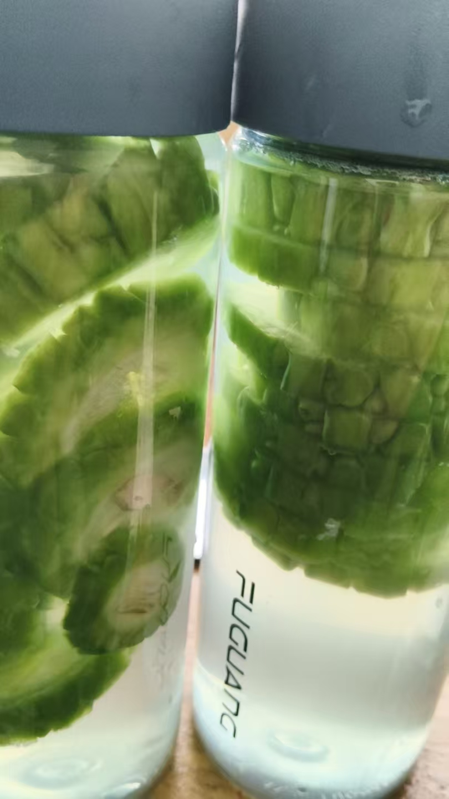

20260820正心，正念，正行，正道
风水布局修炼修行青州龙兴寺南边圆觉寺，是尼姑院
就差点事，群里发消息，没有别的事，除了要钱就是要钱
做个法会，这项几万，那项几万
桌子凳子几万，刚才又发音响需要赞助
建的跟龙兴寺差不多大
估计是有人投资了
龙兴寺，依然在建，免费喝茶小院，自己烧水，随便喝茶
免费供应斋饭
风格截然不同
青州在哪个省啊
山东省潍坊市，青州地级市
我住在潍坊，但老家离青州很近
临朐县就挨着青州市
只有二十几公路
离潍坊68公里
广西也个钦州
那是钦州
音有点相通
古九州吧
qin
qing
对✓
[呲牙][呲牙][呲牙]
你咋把好人去了
发配钦州就是这里
不做好人了吗[呲牙][呲牙]
可见那时候是偏远地带
这两天修心，认为好人是别人说的，不是自己说的就去掉了[呲牙]
看清自己了，不怎么像
[憨笑][憨笑][憨笑][憨笑]
[呲牙][呲牙][呲牙]
刚才看了几分钟抖音
看到了那个国外那法官，
卡普里奥
心里想，要做好人
可脑海里冒出另一个声音，
要尊重因果
那就拿出百分之一的善良，来帮助别人
[呲牙][呲牙]
因果相对来说要看本心
我看过一个孤寡老人
五保户，还有人送米送面，
那不是宣传尊敬老人美德吗
还有我同学，带孩子给山区老人送油送米
但这些老人去世后，都走了畜牲道
因果的关系吗？
看原因，就是该受的业，没有受，业消不完，下辈子继续
佛祖说，一切磨难是让人及早醒悟的
当畜生需要几世呀？
当猫挺好
这个不一定[呲牙][呲牙][呲牙]
有种灵魂剧本论，说是灵魂是来体验不同剧本的，都是灵魂自选的
那是剧本
实际上，跟社会阅历一样，
消业的最好方法是什么做法？
由不得自己选择
我就是这样，干啥也受排挤
干厨师的时候，遍地是厨师
打工的时候，都是自己的厂子，咱们去只能干最脏最累的
正心，正念，正行，正道
啥也不是，最后实在没办法，，当个神仙吧
[憨笑][憨笑][憨笑]
[强][强][强]当神仙好呀
被迫无奈[憨笑][憨笑]
能当神仙的和因果有关系吗？
当神仙听说也得排队
有的神仙有编制，有的神仙没有编制
多少世能修来个当神仙的机会啊
实际当神仙不排队，不是人想的
修到天人，也就是阳神，是光化身
没有人类大脑思维
每个人都有当神仙的可能
随自己的修为，德提升
没有排队一说
群里有个人说自己出阳神，被狂批。
阳神是啥呀？
原始之初，都是一团慧光
几年才有一批名额[呲牙]
区分阴神，阳神
人不是有三魂吗
这么说吧，一团灵光，纯一不杂，他就能做到这些肉眼看得到的超能力，离体，就叫出阳神
只会说嘴的肯定被批
阴神，修的不纯，命光弱，灵光强，预知预见能力强，不能做到这些实际的超能力展示
有肉眼通的就能看到，阳神，是通透，纯白亮光
阴神，半明半暗
我村里，教我民俗的那个老太，就说过，我们供的是阴神，你们修的是阳神
那老太，走了十多年了
我在交警队食堂里干了一年 没发工资，一天，他跑到我家里说，今天去拿工资
我就去了 那经理说，今天发工资，还没给你打电话，怎么就来了
一年才三千多，那天结算了
阴神，通灵能力强
阳神，实战能力强
@呼和浩特 陈呼和 你说的那人，嘴上功夫厉害，人家批，他就听着
[呲牙][呲牙][呲牙]
有实战能力，谁敢说
要有验证，
别像这些专家，只开会说嘴
孩子会，自己不会
一打脸一个准
当然，侯希贵是剧情改编的
就像剧情那样，来来来，变出一堆水果来，
来来来，吃水果
91年定居香港
怪不得当时没听说过这人
批评他的人也不知道阴神和阳神的区别，他们以为阳神就是肉体的人呢
这回终于搞明白了
主要是别提神字
所以我叫天人
带天眼
[呲牙][呲牙][呲牙]
阴神 通灵
阳神 制动
对的
那小孩子阳神还是普遍强大呀，不过随着年龄增长也会退化了
阴神重思维 ，预知预见，遥知遥见
很多人以为阳神是 可以变成肉体的人呢
所以啊，小孩子清纯
阳神阴神都是能量体
哦，这回明白了💡
咱们的几个能力强的孩子，虽然年龄小，都在安心的打坐练九转五行
功能稳定，并且多样
读完这一本经，就说醒梦同光
梦里也有正心正念
看现在的人，看似醒着，实际浑浑噩噩，无所适从
[呲牙][呲牙][呲牙]
【为什么广东那么发达，其实和风水也有一定的关系 - 今日头条】
点击链接打开👉 https://m.toutiao.com/is/SEH5l58_vFw/ SEH5l58_vFw` Axw:/ q@e.Ox :3pm
复制此条消息，打开「今日头条APP」或「今日头条极速版APP」后直接查看~
夫唯不争，故天下莫能与之争
@交易员日报 好多大城市，都有大的风水布局
是的
阴神，负性能量，寒，凉
所以，拜阴神的一般身体不好
阳神，阳性能量，能转化，调动光，热能
磁铁，两极，正负极
独阴不生，孤阳不长
是为人
阴尽阳纯，成就正果
让我真正学到知识的是华严经
[呲牙][呲牙]
金刚经到现在读不懂
脑袋不反应
感觉都是错别句
那金刚经破一切相，都是听别人说的
无长者相，无寿者相
怎么理解
也不是说没有就没有的
[呲牙][呲牙][呲牙]
出门，围个头巾，成女人相吧，肯定不对
如我昔为歌利王割截身体，我于尔时，无我相、无人相、无众生相、无寿者相。
———《金刚经》
豆包大白话总结
-
无长者相：不要拿年龄、地位、身份去分别对待人，众生本平等，外在的“长者”只是世俗的假象。
-
无寿者相：不要执着“我能活多久、生老病死”，没有一个永恒不变的生命体，不贪生、不惧死。
这就是文学解释
我理解的是破诸相，
大肉髻相，广长舌相
三十二相
继续修，修化了
就成八十种随行好，完美相
寿星，专修了个大肉髻，示现智慧
广长舌，舌头一伸，抱住脸面
我是修不到，说读不懂，跟认识字就读懂了，不一回事[呲牙][呲牙][呲牙]
割截身体，无诸相，是说明定力好，不表现出常人的疼痛
菩萨摩诃萨，修于忍辱，为护众生，是故修忍。若得忍已，则得无量福德之聚。
修忍辱者，则得诸佛之所护念，一切天人，皆悉敬仰，现世常得安隐快乐，未来世中，得大涅槃。
———《大般涅槃经》
菩萨怎么修忍
这就是真正问题
不只是忍耐
就像割截身体，会不会把疼痛转移了
那说的就是没有俗相
显了法相
体验了—乘佛威力
我是乘经威力
借用经的无量强大场
看到父亲身上，有百分之三十的灰业障，用大光明手，抓出来，送走了
看到母亲身上，有百分之六十的灰业障，也抓出来送走了
业障跟福德多少决定这一生富贵贫贱
耆那教认为业力是极微细物资类的东西，难道是真的？
对啊
业力是灰黑负磁
功德是白亮正磁
我父亲从小能看到听到一些人以为的东西
十几岁考上那时代的中学
临淄中学
分配工作
到现在有退休金，还有老年补贴
福分相对高高
母亲是我们西山村，从小讨饭，所以看上去业障就相对多
但经过我的返修
母亲查体，指标相当于二三十岁
父亲骨密质紧实，医生都说，很少见九十岁，骨头还这样好的
并且两人很注意饮食，
少肉多素食
爱喝豆子饭
红豆黑豆豌豆豇豆花生，小米
熬的稠稠的
跟青州溴糕一样
还都爱吃甜食
体检，糖还都不高
我们家都一样
乘佛威力，就是在一种，强大磁场里，能量场里，自己做不到，这场里就能做到
场里自己能力提升
还不算借用
是自己亲自做到的
能于一一毛孔之中，出狮子吼说一切佛功德海色身
想想这是一种什么境界
还只是百万境界中的一种
我们都是热性体质

这是我做的苦瓜蜂蜜水，放冰箱
降内热